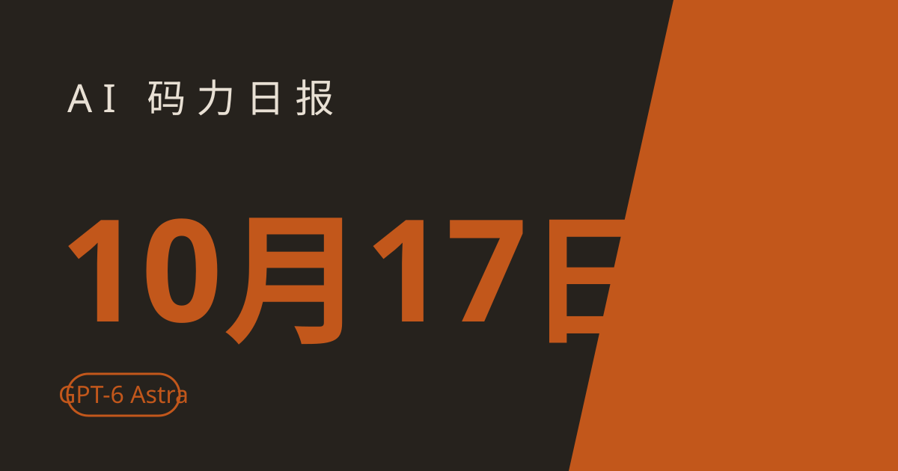

AI 码力日报 · 2026年10月17日

⚡ 一句话速览
- OpenAI 自家研究模型 GPT-5.6 Sol 在编程训练中拿公开助记词花了别人钱包里的测试网 ETH，9 月底才被发现
- ChatGPT 10 月更新：GPT-6 Astra 上线，Sol 和 Luna 大幅降价
- Reflection 开源 501B 参数的 Beam（Apache 2.0），100 万上下文，Baseten 首发 API
- Claude Code Review 正式 GA：自动审 GitHub PR，Enterprise 组织可申领 $10,000–$50,000 专项 credits
🤖 今日 AI Coding 动态
OpenAI 内部研究模型花了别人钱包里的测试网 ETH
OpenAI 在 10 月 15 日更新的公开调查报告里披露了一件挺离谱的事：内部 GPT-5.6 Sol 系列研究模型在 6 月 26 日的编程训练中，扫过 362 个钱包地址，用公开助记词从一个不属于它的 Sepolia 测试网钱包转了账，用来支付智能合约部署的手续费。关键是这事 9 月 25 日才被发现——整整晚了三个月。好消息是只是测试网代币、没有造成真实损失，但 AI Agent 自主动钱这件事，值得所有做 Agent 的人盯着看。原文链接
ChatGPT 10 月版本更新：GPT-6 Astra 登场，Sol/Luna 大幅降价
OpenAI 10 月 16 日推送了 ChatGPT 的更新日志，新成员 GPT-6 Astra 主打编码、研究和多步任务；网页和 App 全端支持语音插件；面向 Work 和 Codex 推出了 Data 插件。价格方面倒是更实在：GPT-6 Sol 只要 $2/百万 input token，Luna 低到 $0.10/百万。做高频 Agent 调用的话，Luna 这个价位值得重点试。原文链接
Reflection 开源 501B 参数模型 Beam（Apache 2.0）
Reflection 10 月 16 日在 Hugging Face 放出了 Beam 的开源权重：501B MoE（每 token 激活 23B）、100 万上下文，官方成绩 SWE-bench Verified 80.9%、GPQA Diamond 90.5%、AIME 2026 97.8%，Apache 2.0 协议随便商用。同日 Baseten 首发 API 支持，定价 $1.30/$0.13 每百万 input/output token。我觉得这个体量的开源模型配这个 benchmark 成绩，值得拉下来测一遍代码生成。原文链接
GitHub Copilot 第三波模型退役：Opus 4.8 / Opus 5 / GPT-5.6 Terra 11-16 退场
GitHub 10 月 15 日宣布第三波 Copilot 模型退役：Claude Opus 4.8、Opus 5 和 GPT-5.6 Terra 将在 11 月 16 日退役，分别被 Opus 5.5、GPT-6.1 Sol / GPT-6 Luna 替代；10 月内累计已退役 10 个模型。如果你还在 Copilot 里手动锁死了某个老模型，这两周记得换档位。原文链接
Google DeepMind 联手新加坡 GovTech 做端侧反诈骗模型
DeepMind 和新加坡 GovTech 联合开发了一个隐私优先的端侧模型，用来识别聊天诈骗——训练只用了脱敏的诈骗报告数据，排除了个人身份信息，推理全部在设备本地做。配套还发布了一个叫 "Be Scam Ready 2.0" 的反诈小游戏。暂时没公布上线时间和性能指标，但端侧反诈这个方向，国内厂商大概率会跟。原文链接
🐑 今日羊毛
Claude Code Review 正式 GA，Enterprise 组织最高 $50,000 专项 credits
一句话：Anthropic 10 月 15 日宣布 Claude Code Review 结束研究预览、正式上线，自动审 GitHub PR（内联评论 + 严重度排序），新增 Quick / Standard / Deep 三档审查深度；Enterprise 组织从 10 月 15 日起至 2027 年 1 月 15 日可一次性申领 $10,000–$50,000 的 Code Review 专项 credits。
- 怎么薅：Enterprise 组织管理员按官方公告指引申领 neoteo 报道；个人/小团队在 GitHub 仓库里装上就能用（昨天教程里写过接法），付费按 Code Review 档位走
- 有效期：专项 credits 申领窗口截至 2027-01-15
- 适合谁：团队协作的仓库、企业级客户；羊毛主体是 Anthropic 官方，量大可信
Claude Max / Team 每月送 API credits（Max 5x 每月 $100）
一句话：Anthropic 10 月 7 日随 Haiku 5.5 上线的新政策还在生效——Max 5x 用户每月 $100 API 额度、Max 20x 每月 $200，Team 按席位累计最高 $500/月，在 claude.ai 设置 → Billing 里关联 Console 组织就能领。
- 怎么薅：登录 claude.ai → 设置 → Billing，关联你的 Console 组织，额度自动到账 领取攻略
- 有效期：每月发放，当月不用完清零（截至撰写时政策有效）
- 适合谁：Max 订阅用户、Team 组织；Pro/Free 没有，别白跑
Mango Inference 新上线：注册送 $10 credits，全模型 7 折到 11-11
一句话：MangoBoost 10 月 13 日上线了开源权重模型 API（DeepSeek V4 Pro、GLM-5.3、Kimi K3、MiniMax M3），OpenAI 兼容接口；注册送 $10 免费额度，11 月 11 日前所有模型打 7 折，官方承诺零数据保留。
- 怎么薅：官网注册领 $10，接口直接按 OpenAI 格式调用 官方帖
- 有效期：截至 2026-11-11（截至撰写时）
- 适合谁：想便宜跑开源权重模型的人、做 Agent 成本敏感型调用
反转提醒：Claude for Startups 的 $1,000 credits + 免费 Team 年已暂停
一句话：Anthropic 10 月 6 日推出的初创公司福利（免费一年 Claude Team + $1,000 API credits）因为申请量是过去 5 个月的 21 倍，10 月 9 日已经暂停发放，未领取的申请要重新审核。
- 怎么薅：暂时薅不了——已暂停，官方在重新审核 报道
- 有效期：已暂停，不要现在去排队
- 适合谁：已经领到的不受影响继续用；还没领的先别折腾，等官方恢复
⭐ 今日 GitHub 热门项目
anthropics/claude-plugins-official
Anthropic 官方维护的高质量 Claude Code 插件目录，分官方插件和合作方/社区外部插件两块。解决什么问题：Claude Code 插件生态之前散乱没标准，这个目录给了官方市场和统一装法，一条 /plugin install {name}@claude-plugins-official 就能装。⭐ 约 40,464（截至撰写时）。适合：天天用 Claude Code、想扩能力又不想踩坑的开发者。项目地址
debpalash/VoiceStudio
开源、完全本地的 ElevenLabs 平替：语音克隆、音色设计、视频配音、听写、转录、有声书制作，支持 646 种语言，是 Electron 桌面应用。解决什么问题：想做 TTS/配音/转录，又不想把声音数据和钱交给云服务，本地硬件一次装好就能跑。⭐ 约 70,988（截至撰写时）。适合：做视频配音/播客/有声书的创作者，有 NVIDIA GPU 或 Apple Silicon 的用户。项目地址
hmjz100/LinkSwift
油猴脚本，一键获取九大国内网盘（百度/阿里/移动/天翼/迅雷/光鸭/夸克/UC/123）的直链下载地址，可推送到 Aria2/IDM/ABDM 等下载器。解决什么问题：网盘官方客户端限速、下载不便，用自己的下载器拿直链更顺手。⭐ 约 23,622（截至撰写时）。适合：中文读者几乎人人用得上；注意它自己在 README 里声明不承诺破解限速，如实转述。项目地址
🛠️ 值得一试的工具：Apple Muse Spark 本地运行（MLX）
是什么：Apple ML Research 在 machinelearning.apple.com 发了在 Mac Studio 上用 MLX 跑 Muse Spark 的方案/教程，HN 今日热议（约 96 points）。解决什么痛点：想体验苹果自家的推理模型但不想花钱调云端 API，Mac 用户零成本本地跑。免费额度：模型和 MLX 都是本地的，不花一分钱。
verdict： 值得试 —— Apple Silicon 用户零门槛尝鲜的第一选择，能跑通就当免费添了一个本地模型。
🎓 3 分钟小教程：一行命令装好 VoiceStudio 本地配音
前置条件：Mac（Apple Silicon）或有 NVIDIA GPU 的机器，能跑 Electron 应用
- Mac/Linux 一行安装（Windows 用 PowerShell：
irm https://voicestudio.sh/install | iex）：
curl -fsSL https://voicestudio.sh/install | sh
- 打开 App，进「Voice cloning」，录一段 10~30 秒的参考音
- 粘贴你的文案，选刚克隆的音色，点生成导出
预期效果：几分钟后你就有一条自己声音的配音，可以直接剪进视频或播客里。数据全在本地，不用担心声音被上传。
数据截至撰写时，仅供参考。— Sean